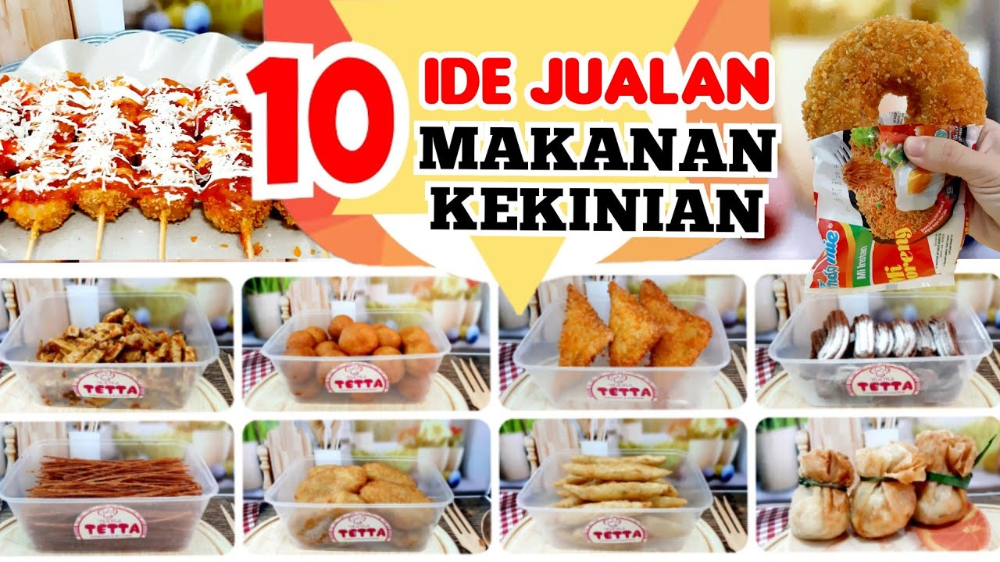

Bakso Bakar
Rp. 40.000
Bakso bakar adalah menu varian bakso yang dipanggang menggunakan bumbu kecap manis, saus, dan mentega.
Bakso bakar mempunyai rasa manis, pedas, dan asin, selain itu terdapat rasa khas dari proses dibakar. Harga tersebut 1porsi bakso bakar
Corndog Mozarella
Rp. 35.000
Corn dog atau yang dikenal dengan hot dog gamja merupakan jajanan kaki lima yang mengenyangkan dan kerap dipasarkan di pasar malam Seoul, Korea Selatan.
Corn dog kemudian mulai diadaptasi dengan berbagai isian, termasuk keju mozarella. Harga tersebut 1porsi Corndog
Sosis Kentang
Rp. 45.000
Sosis kentang merupakan perpaduan antara sosis dan french fries yang digoreng dengan lapisan tepung sehingga menghasilkan tekstur renyah.
Sosis ditusuk sebilah bambu dan diberi campuran saus keju atau mozarella. Harga tersebut 1porsi Sosis Kentang
Sosis Telor
Rp. 40.000
Sosis telur adalah kuliner yang mengunakan bahan dasar sosis dan telur ayam yang campur dengan irisan sayuran, daun bawang, mayonaise dan saus yang lezat.
kuliner ini berbeda dengan egg roll yang cara memasaknya dengan menggoreng telurnya terlebih dahulu.
Telur Gulung
Rp. 38.000
Telur gulung adalah makanan tradisional dan merupakan variasi dari telur goreng yang di mana sebuah telur akan digoreng dan kemudian digulung menggunakan sebuah tusukan yang biasanya di buat dari kayu pohon bambu.
Makanan ini sering dihidangkan dan dijual di sekolah terutama di tingkat sekolah dasar (SD).
Waffle
Rp. 50.000
Waffle adalah hidangan penutup yang terbuat dari adonan beragi atau adonan yang dimasak di antara dua piring yang diberi pola untuk memberikan ukuran, bentuk, dan kesan permukaan yang khas.
Ada banyak variasi berdasarkan jenis pemanggang wafel dan resep yang digunakan
Tentang Jajanan Kekinian

tujuan membuat jajanan kekinian adalah untuk membantu UMKM menemukan wadah atau tempat mereka menjual jajananya dengan mudah
dan membantu menaikan pendapatan mereka karena jaman sekarang orang lebih mending minta dikirim daripada membeli sendiri